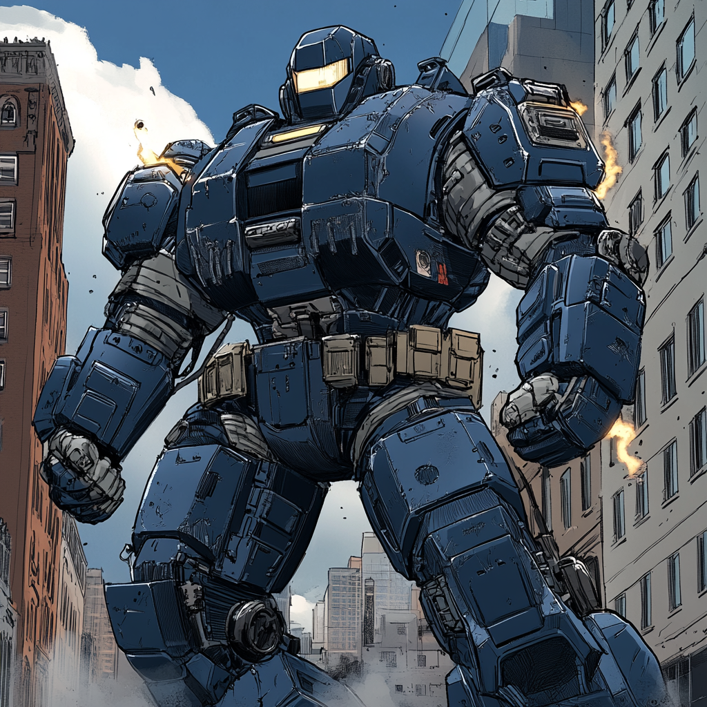

Bulwark: Engineering the Future of Protection

The Builder's Path
Sarah Chen grew up in her family's auto repair shop in Dorchester, where she learned mechanics from her mother, a former Boeing engineer. She showed an early talent for understanding load-bearing systems, often sketching improvements to car suspension designs between repair jobs. Her innovative hydraulic control systems helped her high school robotics team win state championships. MIT recruited her with a full scholarship to their mechanical engineering program. She focused on advanced materials and power systems, developing new approaches to force multiplication in mechanical systems. Her undergraduate thesis on "Dynamic Load Distribution in Powered Frameworks" caught the attention of both military contractors and Stark Industries.
The Atlas Project
After graduating, Sarah joined a small defense contractor in Cambridge, working on exoskeletons for medical rehabilitation. She identified fundamental flaws in existing powered armor designs—they focused too much on weapons and speed and not enough on core structural integrity. The Atlas Frame emerged from her research into construction equipment. Rather than copying humanoid movement, she designed a system that distributed force through an engineered lattice, like modern skyscraper support structures. The result: unprecedented lifting capacity with lower power requirements.
Trial by Fire
The Prudential Tower crisis proved Atlas Frame's worth. When structural damage threatened the building's collapse, Sarah used her prototype to support a failing support column while rescue teams evacuated trapped civilians. The suit performed beyond specifications, holding up tons of concrete for over three hours. The incident revealed both strengths and limitations. The Frame's power systems overheated but never failed. Its structural integrity exceeded theoretical limits, but mobility suffered under extreme loads. Most importantly, it demonstrated the value of defensive engineering over offensive capabilities.
The Academy Calls
Iron Man recommended Sarah for BAA after reviewing the Atlas Frame's performance data. The Academy offered resources to refine her design while training her as a hero. She accepted, seeing an opportunity to prove that engineering could match innate powers in effectiveness. At BAA, Sarah expanded the Atlas Frame's capabilities. She developed modular systems to adapt to different mission requirements while maintaining the core focus on strength and protection. The suit's signature became its ability to serve as mobile cover for teammates, creating defensive positions in any environment.
Present Operations
As Bulwark, Sarah fills the heavy support role on Team Beta. The Atlas Frame's defensive capabilities complement DEX797's offensive focus while providing protection for more vulnerable teammates. She excels at rescue operations, structural support, and holding tactical positions. Sarah maintains a workshop at BAA where she constantly refines the Atlas Frame. Current projects include enhanced thermal management for extended operations, modular armor plates for different threat types, improved power distribution systems, and integration with BAA tactical networks. The suit's limitations become part of her tactical approach as she plans operations around power consumption rates and structural load limits. Her engineering background helps her coordinate with DEX797 on technical issues, while her practical experience connects her with Floodline's first-responder perspective. Sarah still helps at her family's shop on weekends, using the work to inspire improvements to the Atlas Frame. She views the suit as a continual work in progress, with each mission providing data for future enhancements. As Bulwark, she represents a path to heroism built on engineering principles and mechanical innovation.